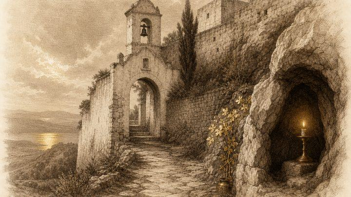
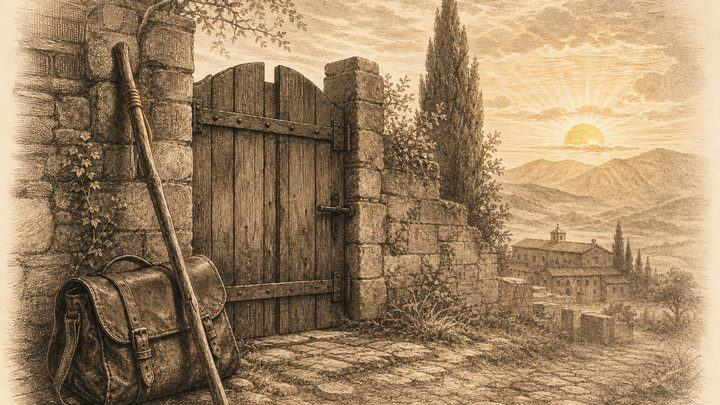
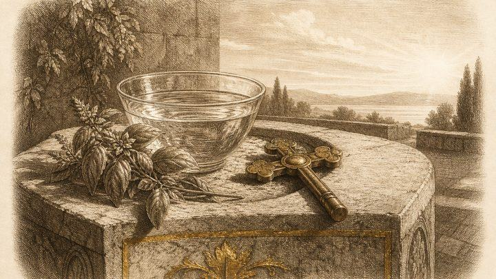
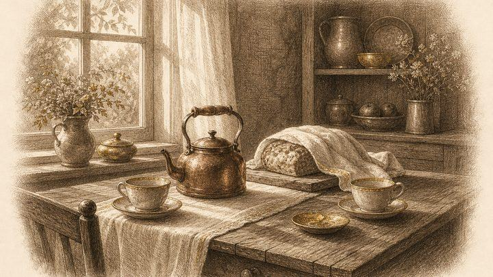
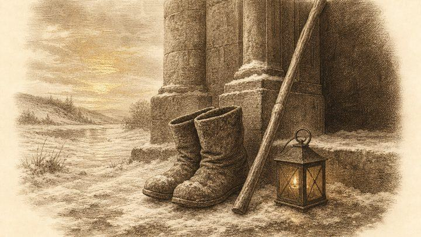
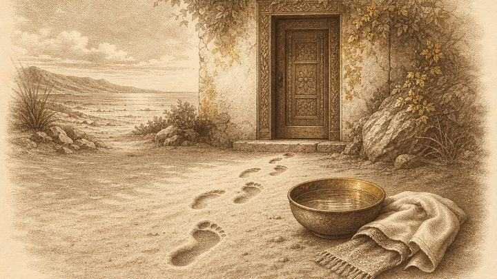
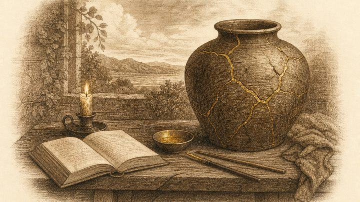
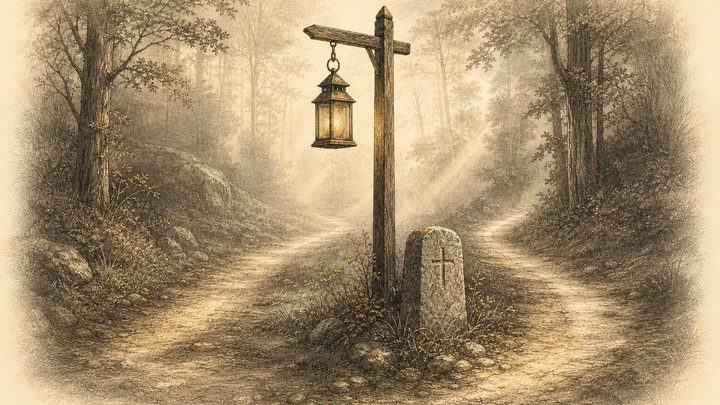
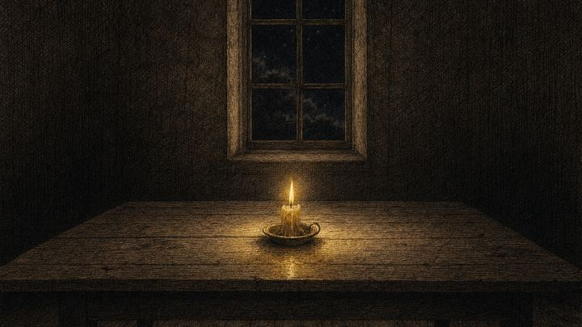

पठन
ऑर्थोडॉक्स चर्च क्या विश्वास करता है और क्यों — इस पर 60 लेख, हर जिज्ञासु पाठक के लिए, और विशेष रूप से अन्य परंपराओं के उन ईसाइयों के लिए जो बहस नहीं, बल्कि एक स्पष्ट विवरण चाहते हैं।
ये पृष्ठ ऑर्थोडॉक्स दृष्टिकोण को उसकी अपनी शर्तों पर प्रस्तुत करते हैं। ये किसी के विरुद्ध नहीं लिखे गए हैं। जहाँ ऑर्थोडॉक्स ईसाई अन्य ईसाइयों से भिन्न हैं, वहाँ वह भिन्नता साफ़-साफ़ बताई गई है और उसका कारण दिया गया है, ताकि पाठक स्वयं उसे परख सकें। इनमें से कई लेख फ़ादर सेराफ़िम रोज़ (1934–1982) के लेखन पर आधारित हैं, जो प्रोटेस्टेंट पृष्ठभूमि से ऑर्थोडॉक्सी में आए थे और जिनका आग्रह था कि अन्य ईसाइयों के प्रति कठोरता, उनके अपने प्रकाशित शब्दों में, “आध्यात्मिक रूप से ग़लत” है, भले ही वह तकनीकी रूप से सही हो।
मठवासी जीवन और आध्यात्मिक बुज़ुर्ग
मठ, आज्ञाकारिता, मुंडन-दीक्षा और आध्यात्मिक पिता: पुस्तक Everyday Saints (रोज़मर्रा के संत) के पीछे का संसार।

प्सकोव-गुफ़ा मठ का इतिहास1473 का एक गुफ़ा-चर्च कैसे एक क़िलेनुमा मठ बना, घेराबंदियों और बीसवीं सदी से कैसे बचा, और तीर्थयात्री आज भी पेचोरी क्यों जाते हैं।8 मिनट का पठन ऑर्थोडॉक्स मठ में आज्ञाकारितामठवासी आज्ञाकारिता क्या है, नौसिखिए रसोई से शुरुआत क्यों करते हैं, इसकी सीमाएँ कहाँ हैं, और एक सामान्य विश्वासी इससे क्या सीख सकता है।7 मिनट का पठन
ऑर्थोडॉक्स मठ में आज्ञाकारितामठवासी आज्ञाकारिता क्या है, नौसिखिए रसोई से शुरुआत क्यों करते हैं, इसकी सीमाएँ कहाँ हैं, और एक सामान्य विश्वासी इससे क्या सीख सकता है।7 मिनट का पठन लोग भिक्षु और भिक्षुणी क्यों बनते हैंभिक्षु और भिक्षुणियाँ वास्तव में क्या करते हैं, मरुभूमि के पिताओं ने इसकी शुरुआत कैसे की, तीन प्रतिज्ञाएँ क्या हैं, और नौसिखिए के वर्ष किस बात की परीक्षा लेते हैं।7 मिनट का पठन
लोग भिक्षु और भिक्षुणी क्यों बनते हैंभिक्षु और भिक्षुणियाँ वास्तव में क्या करते हैं, मरुभूमि के पिताओं ने इसकी शुरुआत कैसे की, तीन प्रतिज्ञाएँ क्या हैं, और नौसिखिए के वर्ष किस बात की परीक्षा लेते हैं।7 मिनट का पठन मठवासी मुंडन-दीक्षा के चरणनौसिखिए से महान स्कीमा तक: हर ऑर्थोडॉक्स मठवासी चरण का अर्थ क्या है, हर चरण में क्या दिया जाता है, और मठवासी दर्जे पुरोहिती पदों से कैसे भिन्न हैं।7 मिनट का पठन
मठवासी मुंडन-दीक्षा के चरणनौसिखिए से महान स्कीमा तक: हर ऑर्थोडॉक्स मठवासी चरण का अर्थ क्या है, हर चरण में क्या दिया जाता है, और मठवासी दर्जे पुरोहिती पदों से कैसे भिन्न हैं।7 मिनट का पठन आध्यात्मिक पिता और बुज़ुर्गऑर्थोडॉक्स स्टारेट्स (आध्यात्मिक बुज़ुर्ग) क्या है और क्या नहीं, आध्यात्मिक पिता कैसे मार्गदर्शन करते हैं, और प्रसिद्धि के पीछे भागे बिना पापस्वीकार सुनने वाला पिता कैसे चुनें।7 मिनट का पठन
आध्यात्मिक पिता और बुज़ुर्गऑर्थोडॉक्स स्टारेट्स (आध्यात्मिक बुज़ुर्ग) क्या है और क्या नहीं, आध्यात्मिक पिता कैसे मार्गदर्शन करते हैं, और प्रसिद्धि के पीछे भागे बिना पापस्वीकार सुनने वाला पिता कैसे चुनें।7 मिनट का पठन
ऑर्थोडॉक्स तीर्थयात्रा मार्गदर्शिकाऑर्थोडॉक्स तीर्थयात्रा की व्यावहारिक मार्गदर्शिका: ईसाई तीर्थ पर क्यों जाते हैं, तैयारी कैसे करें, मठ में कैसा व्यवहार करें, और सिंगापुर से कहाँ जाएँ।8 मिनट का पठनआराधना, प्रार्थना और पल्ली जीवन
मोमबत्तियाँ, पवित्र जल, लिटर्जी, अंत्येष्टि, वयस्क बपतिस्मा, और पहला रविवार कैसा होता है।
 ऑर्थोडॉक्स पास्का: पुनरुत्थान की रात, सरल व्याख्यापास्का कई आराधनाओं में से एक नहीं है। यह चर्च वर्ष का केंद्र है, और ऑर्थोडॉक्स इसे प्रकाश, गायन और एक बहुत पुराने अभिवादन से भरी रात के साथ मनाते हैं।3 मिनट का पठन
ऑर्थोडॉक्स पास्का: पुनरुत्थान की रात, सरल व्याख्यापास्का कई आराधनाओं में से एक नहीं है। यह चर्च वर्ष का केंद्र है, और ऑर्थोडॉक्स इसे प्रकाश, गायन और एक बहुत पुराने अभिवादन से भरी रात के साथ मनाते हैं।3 मिनट का पठन ऑर्थोडॉक्स चर्च में महान उपवास: सात सप्ताहों की मार्गदर्शिकामहान उपवास चर्च की सबसे लंबी तैयारी है: चालीस दिन का उपवास, फिर पवित्र सप्ताह। यह सोमवार को आरंभ होता है, और क्षमा से आरंभ होता है।3 मिनट का पठनजन्मोत्सव का उपवास: यह क्या है और ऑर्थोडॉक्स ईसाई इसे कैसे रखते हैंक्रिसमस से चालीस दिन पहले चर्च अपनी गति धीमी करता है और तैयारी करता है। जन्मोत्सव का उपवास महान उपवास से छोटा और कोमल है, पर यह भी उतना ही हृदय से जुड़ा है।3 मिनट का पठन
ऑर्थोडॉक्स चर्च में महान उपवास: सात सप्ताहों की मार्गदर्शिकामहान उपवास चर्च की सबसे लंबी तैयारी है: चालीस दिन का उपवास, फिर पवित्र सप्ताह। यह सोमवार को आरंभ होता है, और क्षमा से आरंभ होता है।3 मिनट का पठनजन्मोत्सव का उपवास: यह क्या है और ऑर्थोडॉक्स ईसाई इसे कैसे रखते हैंक्रिसमस से चालीस दिन पहले चर्च अपनी गति धीमी करता है और तैयारी करता है। जन्मोत्सव का उपवास महान उपवास से छोटा और कोमल है, पर यह भी उतना ही हृदय से जुड़ा है।3 मिनट का पठन प्रार्थना कैसे करें: शुरुआती लोगों के लिए मार्गदर्शिकाऑर्थोडॉक्स प्रार्थना का एक व्यावहारिक, सरल परिचय: दैनिक प्रार्थना-नियम, यीशु प्रार्थना, अपने शब्दों में प्रार्थना, और जब प्रार्थना सूखी लगे तब क्या करें।7 मिनट का पठन
प्रार्थना कैसे करें: शुरुआती लोगों के लिए मार्गदर्शिकाऑर्थोडॉक्स प्रार्थना का एक व्यावहारिक, सरल परिचय: दैनिक प्रार्थना-नियम, यीशु प्रार्थना, अपने शब्दों में प्रार्थना, और जब प्रार्थना सूखी लगे तब क्या करें।7 मिनट का पठन ऑर्थोडॉक्स मोमबत्तियाँ क्यों जलाते हैंऑर्थोडॉक्स चर्च में मोमबत्ती का क्या अर्थ है, उसे कहाँ रखें, क्या प्रार्थना करें, और एक उष्णकटिबंधीय पल्ली में दूसरों के प्रति विनम्र व्यवहार कैसे करें।7 मिनट का पठन
ऑर्थोडॉक्स मोमबत्तियाँ क्यों जलाते हैंऑर्थोडॉक्स चर्च में मोमबत्ती का क्या अर्थ है, उसे कहाँ रखें, क्या प्रार्थना करें, और एक उष्णकटिबंधीय पल्ली में दूसरों के प्रति विनम्र व्यवहार कैसे करें।7 मिनट का पठन
थियोफ़नी (प्रभु-प्रकटीकरण) का पवित्र जलचर्च थियोफ़नी पर जल को आशीष क्यों देता है, विश्वासी घर पर उसका उपयोग कैसे करते हैं, और उसके साथ श्रद्धा से कैसे व्यवहार करें।7 मिनट का पठन ऑर्थोडॉक्स अंत्येष्टिऑर्थोडॉक्स अंत्येष्टि, उसके बाद होने वाली स्मरण-सेवाओं, और परिवार द्वारा उठाए जा सकने वाले व्यावहारिक कदमों की एक शांत मार्गदर्शिका।8 मिनट का पठन
ऑर्थोडॉक्स अंत्येष्टिऑर्थोडॉक्स अंत्येष्टि, उसके बाद होने वाली स्मरण-सेवाओं, और परिवार द्वारा उठाए जा सकने वाले व्यावहारिक कदमों की एक शांत मार्गदर्शिका।8 मिनट का पठन टाइपिकॉन और चर्च के नियमविधि-निर्देशों की ऑर्थोडॉक्स सेवा-पुस्तक क्या है, यह क्यों है, और चर्च जीवन में कठोरता और दया साथ-साथ कैसे काम करती हैं।8 मिनट का पठन
टाइपिकॉन और चर्च के नियमविधि-निर्देशों की ऑर्थोडॉक्स सेवा-पुस्तक क्या है, यह क्यों है, और चर्च जीवन में कठोरता और दया साथ-साथ कैसे काम करती हैं।8 मिनट का पठन एक वेदी, एक लिटर्जीऑर्थोडॉक्स चर्च सामान्यतः एक वेदी पर दिन में एक ही लिटर्जी क्यों करते हैं, और एंटीमेन्शन, सह-अर्पण और बिशप का इससे क्या संबंध है।8 मिनट का पठन
एक वेदी, एक लिटर्जीऑर्थोडॉक्स चर्च सामान्यतः एक वेदी पर दिन में एक ही लिटर्जी क्यों करते हैं, और एंटीमेन्शन, सह-अर्पण और बिशप का इससे क्या संबंध है।8 मिनट का पठन
पुरोहित की पत्नी: मातुश्काऑर्थोडॉक्स पुरोहित विवाह क्यों कर सकते हैं, विभिन्न परंपराओं में पुरोहित की पत्नी को क्या कहा जाता है, वह क्या करती है, और पल्ली एक पादरी-परिवार की सहायता कैसे कर सकती है।8 मिनट का पठनऑर्थोडॉक्स कैसे बनेंऑर्थोडॉक्स बनना चाहने वाले वयस्कों के लिए चरण-दर-चरण मार्गदर्शिका: पहली भेंट, कैटेक्यूमेन (दीक्षार्थी) काल, बपतिस्मा या क्रिस्मेशन, धर्म-माता-पिता, नया नाम और पहला वर्ष।8 मिनट का पठन ऑर्थोडॉक्स चर्च में आपका पहला रविवाररविवार की लिटर्जी, खड़े रहने, मोमबत्तियों और आइकनों, पवित्र भोज, और एक ऑर्थोडॉक्स पल्ली के परिवार की तरह जीने के बारे में एक शांत, व्यावहारिक मार्गदर्शिका।8 मिनट का पठन
ऑर्थोडॉक्स चर्च में आपका पहला रविवाररविवार की लिटर्जी, खड़े रहने, मोमबत्तियों और आइकनों, पवित्र भोज, और एक ऑर्थोडॉक्स पल्ली के परिवार की तरह जीने के बारे में एक शांत, व्यावहारिक मार्गदर्शिका।8 मिनट का पठनसंत, स्वर्गदूत और इतिहास में चर्च
संत किसे बनाता है, मसीह के लिए मूर्ख, अदृश्य संसार, और सताव के समय चर्च।
 ऑर्थोडॉक्सी में रक्षक स्वर्गदूतपवित्रशास्त्र, कलीसिया के पिता और चर्च की प्रार्थनाएँ रक्षक स्वर्गदूतों के बारे में क्या कहती हैं, उनसे सहायता कैसे माँगें, और स्वर्गदूत क्या नहीं हैं।7 मिनट का पठन
ऑर्थोडॉक्सी में रक्षक स्वर्गदूतपवित्रशास्त्र, कलीसिया के पिता और चर्च की प्रार्थनाएँ रक्षक स्वर्गदूतों के बारे में क्या कहती हैं, उनसे सहायता कैसे माँगें, और स्वर्गदूत क्या नहीं हैं।7 मिनट का पठन मॉस्को के संत तिखोनपैट्रिआर्क तिखोन का जीवन: अमेरिका में मिशनरी बिशप, 1917 में मॉस्को के पहले पैट्रिआर्क, सोवियत शासन में विश्वास के साक्षी (कन्फ़ेसर), और पूरे चर्च के संत।8 मिनट का पठन
मॉस्को के संत तिखोनपैट्रिआर्क तिखोन का जीवन: अमेरिका में मिशनरी बिशप, 1917 में मॉस्को के पहले पैट्रिआर्क, सोवियत शासन में विश्वास के साक्षी (कन्फ़ेसर), और पूरे चर्च के संत।8 मिनट का पठन स्वर्गदूत, दुष्टात्माएँ और अदृश्य संसारचर्च स्वर्गदूतों, दुष्टात्माओं और आत्मिक युद्ध के बारे में क्या सिखाता है, और उसका उत्तर सनसनी के बजाय प्रार्थना, संस्कार और नम्रता क्यों है।8 मिनट का पठन
स्वर्गदूत, दुष्टात्माएँ और अदृश्य संसारचर्च स्वर्गदूतों, दुष्टात्माओं और आत्मिक युद्ध के बारे में क्या सिखाता है, और उसका उत्तर सनसनी के बजाय प्रार्थना, संस्कार और नम्रता क्यों है।8 मिनट का पठन ऑर्थोडॉक्सी में संत किसे बनाता हैऑर्थोडॉक्स चर्च पवित्रता को कैसे समझता है और संतों को कैसे पहचानता है, और संत दोषरहित लोग नहीं बल्कि पश्चात्तापी पापी क्यों हैं।8 मिनट का पठन
ऑर्थोडॉक्सी में संत किसे बनाता हैऑर्थोडॉक्स चर्च पवित्रता को कैसे समझता है और संतों को कैसे पहचानता है, और संत दोषरहित लोग नहीं बल्कि पश्चात्तापी पापी क्यों हैं।8 मिनट का पठन सोवियत शासन में चर्च1917 से 1988 के बाद के पुनर्जागरण तक रूसी ऑर्थोडॉक्स चर्च की एक तथ्यात्मक रूपरेखा: सताव, 1943 का समझौता, ख्रुश्चेव के समय चर्चों का बंद होना, और नवीनीकरण।9 मिनट का पठन
सोवियत शासन में चर्च1917 से 1988 के बाद के पुनर्जागरण तक रूसी ऑर्थोडॉक्स चर्च की एक तथ्यात्मक रूपरेखा: सताव, 1943 का समझौता, ख्रुश्चेव के समय चर्चों का बंद होना, और नवीनीकरण।9 मिनट का पठन रूस के नए शहीदरूस के बीसवीं सदी के शहीद कौन थे, उन्होंने कहाँ दुःख सहा, चर्च ने कब उन्हें संतों में गिना, और ऑर्थोडॉक्स ईसाई उनका आदर क्यों करते हैं।8 मिनट का पठन
रूस के नए शहीदरूस के बीसवीं सदी के शहीद कौन थे, उन्होंने कहाँ दुःख सहा, चर्च ने कब उन्हें संतों में गिना, और ऑर्थोडॉक्स ईसाई उनका आदर क्यों करते हैं।8 मिनट का पठन
मसीह के लिए मूर्ख और सरल पवित्रताऑर्थोडॉक्स चर्च पवित्र मूर्खों का सम्मान क्यों करता है, मसीह के लिए मूर्खता मानसिक रोग से कैसे भिन्न है, और सच्ची पवित्रता इतनी बार साधारण क्यों दिखती है।8 मिनट का पठनपश्चात्ताप, नम्रता और ईश्वरीय विधान
गिरा हुआ व्यक्ति फिर से कैसे उठाया जाता है, नम्रता क्या है, और क्या संयोग जैसी कोई चीज़ होती भी है।

ऑर्थोडॉक्स ईसाई धर्म में नम्रताऑर्थोडॉक्स नम्रता वास्तव में क्या है, कलीसिया के पिता इसके बारे में क्या कहते हैं, इसे झूठी नम्रता से कैसे पहचानें, और इसका अभ्यास करने के सात सरल तरीक़े।8 मिनट का पठन
गंभीर पाप के बाद पश्चात्तापगंभीर पाप के बाद पश्चात्ताप के बारे में ऑर्थोडॉक्स शिक्षा क्या कहती है: पवित्रशास्त्र के उदाहरण, औषधि के रूप में प्रायश्चित, पादरी, निराशा, और पहले व्यावहारिक कदम।8 मिनट का पठन
ईश्वरीय विधान और संयोगऑर्थोडॉक्स ईसाई परमेश्वर के विधान, स्वतंत्र इच्छा और तथाकथित संयोगों को कैसे समझते हैं, और चर्च घटनाओं का अति-अर्थ निकाले बिना भरोसा रखने का आग्रह क्यों करता है।8 मिनट का पठनयह कहाँ से शुरू होता है
फ़ादर सेराफ़िम रोज़ कौन थे, ये पृष्ठ किस भावना से लिखे गए हैं, और सत्य का प्रश्न पूछना ही क्यों सार्थक है।
 फ़ादर सेराफ़िम रोज़ कौन थे?एक कैलिफ़ोर्नियावासी, जिसने बचपन का धर्म खो दिया, चीनी दर्शन पढ़ा, जिज्ञासावश एक रूसी चर्च में चला गया, और जंगल में एक हायरोमॉन्क (पुरोहित-भिक्षु) के रूप में देह त्यागी।9 मिनट का पठन
फ़ादर सेराफ़िम रोज़ कौन थे?एक कैलिफ़ोर्नियावासी, जिसने बचपन का धर्म खो दिया, चीनी दर्शन पढ़ा, जिज्ञासावश एक रूसी चर्च में चला गया, और जंगल में एक हायरोमॉन्क (पुरोहित-भिक्षु) के रूप में देह त्यागी।9 मिनट का पठन धार्मिक कठोरता के विरुद्ध फ़ादर सेराफ़िम रोज़उन्होंने ऑर्थोडॉक्स चर्च के अनन्य दावे को बिना नरम किए थामे रखा, और अपने अंतिम वर्ष यह तर्क देने में लगाए कि जो ईसाई इसे क्रूरता से कहते हैं, वे आध्यात्मिक रूप से ग़लत हैं।10 मिनट का पठन
धार्मिक कठोरता के विरुद्ध फ़ादर सेराफ़िम रोज़उन्होंने ऑर्थोडॉक्स चर्च के अनन्य दावे को बिना नरम किए थामे रखा, और अपने अंतिम वर्ष यह तर्क देने में लगाए कि जो ईसाई इसे क्रूरता से कहते हैं, वे आध्यात्मिक रूप से ग़लत हैं।10 मिनट का पठन
शून्यवाद और सत्य का प्रश्नउनकी सबसे कठिन पुस्तक खलनायकों के बारे में नहीं है। यह इस बारे में है कि एक सभ्यता कैसे यह मानना छोड़ देती है कि कुछ भी सत्य है — और इसे ऐसे व्यक्ति ने लिखा जिसने स्वयं यह मानना छोड़ दिया था।10 मिनट का पठनपवित्रशास्त्र, परंपरा और अधिकार
मसीही विश्वास कहाँ सुरक्षित रखा जाता है, बाइबिल को किसने मान्यता दी, और चर्च उसे कैसे पढ़ता है।
 केवल पवित्रशास्त्र, या चर्च के भीतर पवित्रशास्त्र?मसीही विश्वास कहाँ सुरक्षित रखा जाता है और आगे सौंपा जाता है — इसके दो विवरण, साथ-साथ रखे गए और व्यंग्यचित्र के बजाय उनकी अपनी शर्तों पर समझाए गए।9 मिनट का पठन
केवल पवित्रशास्त्र, या चर्च के भीतर पवित्रशास्त्र?मसीही विश्वास कहाँ सुरक्षित रखा जाता है और आगे सौंपा जाता है — इसके दो विवरण, साथ-साथ रखे गए और व्यंग्यचित्र के बजाय उनकी अपनी शर्तों पर समझाए गए।9 मिनट का पठन किसने तय किया कि बाइबिल में कौन-सी पुस्तकें हों?धर्मग्रंथ-सूची (कैनन) किसी एक मतदान से तय नहीं हुई; वह उससे उभरी जो कलीसियाएँ वास्तव में ऊँचे स्वर में पढ़ती थीं, और असली इतिहास सामान्य सारांशों से कहीं अधिक रोचक है।9 मिनट का पठन
किसने तय किया कि बाइबिल में कौन-सी पुस्तकें हों?धर्मग्रंथ-सूची (कैनन) किसी एक मतदान से तय नहीं हुई; वह उससे उभरी जो कलीसियाएँ वास्तव में ऊँचे स्वर में पढ़ती थीं, और असली इतिहास सामान्य सारांशों से कहीं अधिक रोचक है।9 मिनट का पठन कलीसिया के पिताओं के साथ पवित्रशास्त्र पढ़नाऑर्थोडॉक्सी बीस सदियों में फैले एक समुदाय के भीतर बाइबिल क्यों पढ़ती है, और कलीसिया के पिता पढ़ते समय वास्तव में क्या कर रहे थे।9 मिनट का पठन
कलीसिया के पिताओं के साथ पवित्रशास्त्र पढ़नाऑर्थोडॉक्सी बीस सदियों में फैले एक समुदाय के भीतर बाइबिल क्यों पढ़ती है, और कलीसिया के पिता पढ़ते समय वास्तव में क्या कर रहे थे।9 मिनट का पठन सात विश्वव्यापी महासभाएँ क्या हैं?325 में नीकिया से 787 में नीकिया तक, सात महासभाओं ने वे प्रश्न सुलझाए जिन्हें चर्च खुला नहीं छोड़ सकता था — और एक कसौटी तय करती है कि कौन-सी महासभाएँ मान्य हैं।9 मिनट का पठन
सात विश्वव्यापी महासभाएँ क्या हैं?325 में नीकिया से 787 में नीकिया तक, सात महासभाओं ने वे प्रश्न सुलझाए जिन्हें चर्च खुला नहीं छोड़ सकता था — और एक कसौटी तय करती है कि कौन-सी महासभाएँ मान्य हैं।9 मिनट का पठन प्रेरितिक उत्तराधिकार, और यह क्यों महत्त्वपूर्ण हैहाथ रखने की अटूट परंपरा न तो जादू की कोई कड़ी है, न पवित्रता की गारंटी। ऑर्थोडॉक्सी के अनुसार यह वास्तव में क्या आगे पहुँचाती है, वह यहाँ है।9 मिनट का पठन
प्रेरितिक उत्तराधिकार, और यह क्यों महत्त्वपूर्ण हैहाथ रखने की अटूट परंपरा न तो जादू की कोई कड़ी है, न पवित्रता की गारंटी। ऑर्थोडॉक्सी के अनुसार यह वास्तव में क्या आगे पहुँचाती है, वह यहाँ है।9 मिनट का पठन क्या मसीही सिद्धांत विकसित होता है, या सुरक्षित रखा जाता है?ऑर्थोडॉक्सी कहती है कि विश्वास की रक्षा की जाती है, उसे सुधारा नहीं जाता। फिर भी चर्च ने नए शब्द गढ़े, और परंपरा का अपना क्लासिक ग्रंथ विकास की गुंजाइश देता है।9 मिनट का पठन
क्या मसीही सिद्धांत विकसित होता है, या सुरक्षित रखा जाता है?ऑर्थोडॉक्सी कहती है कि विश्वास की रक्षा की जाती है, उसे सुधारा नहीं जाता। फिर भी चर्च ने नए शब्द गढ़े, और परंपरा का अपना क्लासिक ग्रंथ विकास की गुंजाइश देता है।9 मिनट का पठनसंस्कारमय जीवन
बपतिस्मा, यूखरिस्त, पापस्वीकार, आइकन और उपवास — ऑर्थोडॉक्स ईसाई मानते हैं कि इनमें क्या घटित होता है।
 ऑर्थोडॉक्स बपतिस्मा में क्या होता हैतीन बार डुबकी, एक त्याग, पूर्व की ओर मुड़ना, और यह दावा कि जल में खड़े व्यक्ति में सचमुच कुछ वास्तविक घटित होता है।9 मिनट का पठनयूखरिस्त: व्याख्या के बिना वास्तविक उपस्थितिऑर्थोडॉक्स चर्च कहता है कि रोटी और दाखरस सचमुच मसीह की देह और लहू बन जाते हैं, और फिर यह बताने से इनकार करता है कि किस प्रक्रिया से।9 मिनट का पठन
ऑर्थोडॉक्स बपतिस्मा में क्या होता हैतीन बार डुबकी, एक त्याग, पूर्व की ओर मुड़ना, और यह दावा कि जल में खड़े व्यक्ति में सचमुच कुछ वास्तविक घटित होता है।9 मिनट का पठनयूखरिस्त: व्याख्या के बिना वास्तविक उपस्थितिऑर्थोडॉक्स चर्च कहता है कि रोटी और दाखरस सचमुच मसीह की देह और लहू बन जाते हैं, और फिर यह बताने से इनकार करता है कि किस प्रक्रिया से।9 मिनट का पठन अपने पाप पुरोहित के सामने क्यों स्वीकार करें?ऑर्थोडॉक्स पापस्वीकार अदालत में पेशी की बजाय चिकित्सक के पास जाने के अधिक निकट है, और आपके पास खड़ा पुरोहित न्यायाधीश नहीं बल्कि साक्षी है।9 मिनट का पठन
अपने पाप पुरोहित के सामने क्यों स्वीकार करें?ऑर्थोडॉक्स पापस्वीकार अदालत में पेशी की बजाय चिकित्सक के पास जाने के अधिक निकट है, और आपके पास खड़ा पुरोहित न्यायाधीश नहीं बल्कि साक्षी है।9 मिनट का पठन क्रिस्मेशन: पवित्र आत्मा के वरदान की मुहरवह अभिषेक जो बपतिस्मा के तुरंत बाद होता है, वह सुगंधित तेल जिसे पैट्रिआर्क पवित्र करते हैं, और वह द्वार जिससे अधिकांश धर्मांतरित लोग ऑर्थोडॉक्स चर्च में प्रवेश करते हैं।9 मिनट का पठनऑर्थोडॉक्स ईसाई आज भी उपवास क्यों रखते हैंचार उपवास-काल, सप्ताह में दो दिन, और एक बात जो शुरू में ही साफ़ कह देनी चाहिए: कोई भी परमेश्वर से कुछ ख़रीद नहीं रहा है।9 मिनट का पठन
क्रिस्मेशन: पवित्र आत्मा के वरदान की मुहरवह अभिषेक जो बपतिस्मा के तुरंत बाद होता है, वह सुगंधित तेल जिसे पैट्रिआर्क पवित्र करते हैं, और वह द्वार जिससे अधिकांश धर्मांतरित लोग ऑर्थोडॉक्स चर्च में प्रवेश करते हैं।9 मिनट का पठनऑर्थोडॉक्स ईसाई आज भी उपवास क्यों रखते हैंचार उपवास-काल, सप्ताह में दो दिन, और एक बात जो शुरू में ही साफ़ कह देनी चाहिए: कोई भी परमेश्वर से कुछ ख़रीद नहीं रहा है।9 मिनट का पठनपरमेश्वर की माता और संत
सम्मान और आराधना, प्रार्थना का निवेदन, पवित्र अवशेष, और मृत्यु के दोनों ओर एक ही चर्च।
 ऑर्थोडॉक्स ईसाई परमेश्वर की माता का सम्मान क्यों करते हैंथियोटोकोस (परमेश्वर की जननी) उपाधि मसीह के विषय में सत्य की रक्षा के लिए परिभाषित की गई थी; ऑर्थोडॉक्स ईसाई उनकी माता को जो सम्मान देते हैं वह इसी से निकलता है, और आराधना तक नहीं पहुँचता।9 मिनट का पठन
ऑर्थोडॉक्स ईसाई परमेश्वर की माता का सम्मान क्यों करते हैंथियोटोकोस (परमेश्वर की जननी) उपाधि मसीह के विषय में सत्य की रक्षा के लिए परिभाषित की गई थी; ऑर्थोडॉक्स ईसाई उनकी माता को जो सम्मान देते हैं वह इसी से निकलता है, और आराधना तक नहीं पहुँचता।9 मिनट का पठन संतों से अपने लिए प्रार्थना करने का निवेदन“एक ही मध्यस्थ” वाली आपत्ति इस प्रथा के विरुद्ध सबसे मज़बूत तर्क है, और यह कंधे उचकाने के बजाय एक वास्तविक उत्तर की हक़दार है।9 मिनट का पठन
संतों से अपने लिए प्रार्थना करने का निवेदन“एक ही मध्यस्थ” वाली आपत्ति इस प्रथा के विरुद्ध सबसे मज़बूत तर्क है, और यह कंधे उचकाने के बजाय एक वास्तविक उत्तर की हक़दार है।9 मिनट का पठन ऑर्थोडॉक्स ईसाई पवित्र अवशेषों का आदर क्यों करते हैंहर ऑर्थोडॉक्स वेदी में किसी शहीद की अस्थि होती है। यहाँ उस प्रथा के पीछे का तर्क है जो अधिकांश प्रोटेस्टेंट आगंतुकों को सचमुच अजीब लगती है।9 मिनट का पठन
ऑर्थोडॉक्स ईसाई पवित्र अवशेषों का आदर क्यों करते हैंहर ऑर्थोडॉक्स वेदी में किसी शहीद की अस्थि होती है। यहाँ उस प्रथा के पीछे का तर्क है जो अधिकांश प्रोटेस्टेंट आगंतुकों को सचमुच अजीब लगती है।9 मिनट का पठन संतों की सहभागिता, सरल व्याख्यायदि चर्च एक देह है और मृत्यु उसे खंडित नहीं करती, तो इससे यह बहुत कुछ निकलता है कि ईसाई कैसे आराधना करते हैं और कैसे शोक मनाते हैं।9 मिनट का पठन
संतों की सहभागिता, सरल व्याख्यायदि चर्च एक देह है और मृत्यु उसे खंडित नहीं करती, तो इससे यह बहुत कुछ निकलता है कि ईसाई कैसे आराधना करते हैं और कैसे शोक मनाते हैं।9 मिनट का पठनमृत्यु के बाद आत्मा
मृत्यु के पार क्या प्रतीक्षा करता है, इस पर ऑर्थोडॉक्सी क्या कहती है, और क्या कहने से बचती है।
 पितृ-शनिवार और दिमित्रियेव शनिवार: चर्च मृतकों को एक साथ क्यों स्मरण करता हैवर्ष में कई बार चर्च एक शनिवार अलग रखता है ताकि सभी दिवंगतों को एक साथ स्मरण किया जाए, केवल उन्हें नहीं जिनके नाम हम जानते हैं। 2026 में 7 नवंबर को पड़ने वाला दिमित्रियेव शनिवार इनमें सबसे प्रसिद्ध है।3 मिनट का पठन
पितृ-शनिवार और दिमित्रियेव शनिवार: चर्च मृतकों को एक साथ क्यों स्मरण करता हैवर्ष में कई बार चर्च एक शनिवार अलग रखता है ताकि सभी दिवंगतों को एक साथ स्मरण किया जाए, केवल उन्हें नहीं जिनके नाम हम जानते हैं। 2026 में 7 नवंबर को पड़ने वाला दिमित्रियेव शनिवार इनमें सबसे प्रसिद्ध है।3 मिनट का पठन ऑर्थोडॉक्सी के अनुसार मृत्यु के बाद आत्मा के साथ क्या होता हैऑर्थोडॉक्स चर्च आत्मा के पहले दिनों के बारे में काफ़ी कुछ कहता है, और एक ऐसे संयम के साथ कहता है जो शिक्षा का ही भाग है, कोई क्षमा-याचना नहीं।9 मिनट का पठन
ऑर्थोडॉक्सी के अनुसार मृत्यु के बाद आत्मा के साथ क्या होता हैऑर्थोडॉक्स चर्च आत्मा के पहले दिनों के बारे में काफ़ी कुछ कहता है, और एक ऐसे संयम के साथ कहता है जो शिक्षा का ही भाग है, कोई क्षमा-याचना नहीं।9 मिनट का पठन हवाई चुंगी-घर (टोल-हाउस), सरल व्याख्याएक पुरानी और व्यापक रूप से प्रमाणित ऑर्थोडॉक्स शिक्षा, जिसे अक्सर दोनों दिशाओं में ग़लत पढ़ा जाता है, और जिस पर ऑर्थोडॉक्स लेखकों में वास्तविक मतभेद है।10 मिनट का पठन
हवाई चुंगी-घर (टोल-हाउस), सरल व्याख्याएक पुरानी और व्यापक रूप से प्रमाणित ऑर्थोडॉक्स शिक्षा, जिसे अक्सर दोनों दिशाओं में ग़लत पढ़ा जाता है, और जिस पर ऑर्थोडॉक्स लेखकों में वास्तविक मतभेद है।10 मिनट का पठन मृत्यु-निकट अनुभव: एक ऑर्थोडॉक्स दृष्टिऑर्थोडॉक्सी इन अनुभवों को न तो ख़ारिज करती है और न ही उन्हें आने वाले संसार का नक्शा मानती है; वह उनके बारे में एक अलग प्रश्न पूछती है।9 मिनट का पठनऑर्थोडॉक्स ईसाई मृतकों के लिए प्रार्थना क्यों करते हैंपानिखिदा (मृतकों के लिए प्रार्थना-सेवा), चालीस दिन, रादोनित्सा और पितृ-शनिवारों की मार्गदर्शिका: यह प्रथा कहाँ से आती है, और बहुत से ईसाई इसे क्यों नहीं मानते।8 मिनट का पठन
मृत्यु-निकट अनुभव: एक ऑर्थोडॉक्स दृष्टिऑर्थोडॉक्सी इन अनुभवों को न तो ख़ारिज करती है और न ही उन्हें आने वाले संसार का नक्शा मानती है; वह उनके बारे में एक अलग प्रश्न पूछती है।9 मिनट का पठनऑर्थोडॉक्स ईसाई मृतकों के लिए प्रार्थना क्यों करते हैंपानिखिदा (मृतकों के लिए प्रार्थना-सेवा), चालीस दिन, रादोनित्सा और पितृ-शनिवारों की मार्गदर्शिका: यह प्रथा कहाँ से आती है, और बहुत से ईसाई इसे क्यों नहीं मानते।8 मिनट का पठन ऑर्थोडॉक्स शिक्षा में दो न्यायऑर्थोडॉक्सी के अनुसार व्यक्ति की मृत्यु पर क्या तय हो जाता है, सामान्य पुनरुत्थान तक क्या प्रतीक्षा करता है, और यह अंतराल न तो दूसरा अवसर है और न ही पर्गेटरी (शोधन-स्थान)।9 मिनट का पठन
ऑर्थोडॉक्स शिक्षा में दो न्यायऑर्थोडॉक्सी के अनुसार व्यक्ति की मृत्यु पर क्या तय हो जाता है, सामान्य पुनरुत्थान तक क्या प्रतीक्षा करता है, और यह अंतराल न तो दूसरा अवसर है और न ही पर्गेटरी (शोधन-स्थान)।9 मिनट का पठन स्वर्ग और नरक: स्थान नहीं, संबंधकलीसिया के पिता एक ही ईश्वरीय प्रेम की बात करते हैं, जिसे चाहने वाले प्रकाश के रूप में ग्रहण करते हैं, और न चाहने वाले अग्नि के रूप में सहते हैं।9 मिनट का पठन
स्वर्ग और नरक: स्थान नहीं, संबंधकलीसिया के पिता एक ही ईश्वरीय प्रेम की बात करते हैं, जिसे चाहने वाले प्रकाश के रूप में ग्रहण करते हैं, और न चाहने वाले अग्नि के रूप में सहते हैं।9 मिनट का पठनआधुनिक संसार में विश्वास
आध्यात्मिक अनुभव और उसकी परख, एक्यूमेनिज़्म (ईसाई एकता आंदोलन) का अर्थ, और सत्य-साधक की पूर्व की ओर यात्रा।
 नई धार्मिक चेतना पर फ़ादर सेराफ़िम रोज़कैलिफ़ोर्निया के जंगल में रहने वाले एक हायरोमॉन्क ने अपने चारों ओर घटती एक चीज़ को एक नाम दिया, और वह नाम उस दशक से कहीं आगे तक टिका रहा।9 मिनट का पठन
नई धार्मिक चेतना पर फ़ादर सेराफ़िम रोज़कैलिफ़ोर्निया के जंगल में रहने वाले एक हायरोमॉन्क ने अपने चारों ओर घटती एक चीज़ को एक नाम दिया, और वह नाम उस दशक से कहीं आगे तक टिका रहा।9 मिनट का पठन आध्यात्मिक भ्रम: जिसे कलीसिया के पिता प्रेलेस्ट कहते हैंऑर्थोडॉक्स ईसाइयों को सिखाया जाता है कि वे दूसरों के आध्यात्मिक अनुभवों से पहले अपने अनुभवों पर संदेह करें, और इसके कारण के लिए एक पुराना शब्द है।9 मिनट का पठन
आध्यात्मिक भ्रम: जिसे कलीसिया के पिता प्रेलेस्ट कहते हैंऑर्थोडॉक्स ईसाइयों को सिखाया जाता है कि वे दूसरों के आध्यात्मिक अनुभवों से पहले अपने अनुभवों पर संदेह करें, और इसके कारण के लिए एक पुराना शब्द है।9 मिनट का पठन एक्यूमेनिज़्म शब्द का वास्तव में क्या अर्थ रहा हैएक ही शब्द ने कम से कम तीन अलग-अलग परियोजनाओं का भार उठाया है, और इस पर अधिकांश बहसें ऐसे लोगों के बीच होती हैं जो इसे अलग-अलग अर्थों में ले रहे होते हैं।10 मिनट का पठन
एक्यूमेनिज़्म शब्द का वास्तव में क्या अर्थ रहा हैएक ही शब्द ने कम से कम तीन अलग-अलग परियोजनाओं का भार उठाया है, और इस पर अधिकांश बहसें ऐसे लोगों के बीच होती हैं जो इसे अलग-अलग अर्थों में ले रहे होते हैं।10 मिनट का पठन पूर्वी धर्म और पश्चिमी साधककैलिफ़ोर्निया के जंगल में भिक्षु बनने से पहले यूजीन रोज़ ने चीनी ज्ञानियों को उनकी अपनी भाषा में पढ़ा था — और इसीलिए उनके बाद के निष्कर्ष का वज़न है।9 मिनट का पठन
पूर्वी धर्म और पश्चिमी साधककैलिफ़ोर्निया के जंगल में भिक्षु बनने से पहले यूजीन रोज़ ने चीनी ज्ञानियों को उनकी अपनी भाषा में पढ़ा था — और इसीलिए उनके बाद के निष्कर्ष का वज़न है।9 मिनट का पठन आत्माओं की परख: धार्मिक अनुभव की जाँचकलीसिया के पिता मानते थे कि सच्चे मन वाले लोग भी अपने आध्यात्मिक अनुभवों के बारे में अक्सर भूल करते हैं, और उन्होंने जाँच का एक तरीक़ा छोड़ा।9 मिनट का पठन
आत्माओं की परख: धार्मिक अनुभव की जाँचकलीसिया के पिता मानते थे कि सच्चे मन वाले लोग भी अपने आध्यात्मिक अनुभवों के बारे में अक्सर भूल करते हैं, और उन्होंने जाँच का एक तरीक़ा छोड़ा।9 मिनट का पठनयह पल्ली अपना परिसर किराए पर लेती है और इसे कोई सरकारी अनुदान नहीं मिलता। किराए और संचालन खर्च के लिए हर महीने लगभग S$18,000 की आवश्यकता होती है। यदि ये पृष्ठ आपके लिए उपयोगी रहे हैं, तो कृपया इन्हें और पल्ली को चलाए रखने में सहायता करने पर विचार करें।
पल्ली की सहायता करें